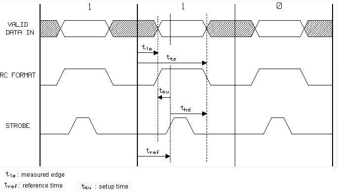
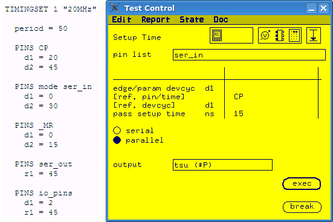
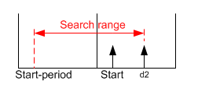

Setup Time conversion
The setup time test can be pass/fail test or value test.
About this task
For pass/fail test, you can convert it to an
ac_tml.AcTest.functionalTest by setting the measured edge position to
reference time minus pass setup time.
For value test, you can convert it to an
ac_tml.AcTest.parametricFunctiolnalTest test method. Firstly, you need to
define a timing spec to control the measured edge. Then in the
ac_tml.AcTest. parametricFunctionalTest test method, you can use the timing spec
as the parameter to shift.
In value test, the Setup Time test function tries to find the minimum time that the input signal must be valid before a reference signal transition. It moves the position of the drive edge to find the pass/fail or fail/pass transition of the functional test. The definition of setup time is shown in the figure below.

Procedure
Example
The following example shows how to convert a Setup Time test to
ac_tml.AcTest.parametricFunctionalTest. The timing set used in the example is
listed on the left side.

In this example, a parallel setup time measurement is done on the drive edge d1 of pin group ser_in. The reference time point is d1 of pin CP. If the measured setup time is less than 15 ns, the measurement is pass.
To convert the measurement to an
ac_tml.AcTest.parametrciFunctionalTest, you need to:
- Define a timing spec setup_time to control the edge position of
d1
PINS ser_in d1=20-setup_time d2=30
- Calculate the range of setup_time according to the range of
d1.
There is a drive edge d2 defined on the right side of d1 and no drive edge between d1 and the beginning of the period. So the search range of d1 is from start point minus one period to d2.

start = reference_time-pass_setup_time = 20 - 15 = 5 ns, period = 50ns, d2 = 30 ns. The search range of d1 is from start-period to d2, which is from -45 ns to 30 ns.
setup_time = 20 - d1. The search range of setup_time is from -10 ns to 65 ns.
ac_tml.AcTest.parametricFunctionalTest as below:|
spec |
setup_time |
|
resultPinList |
ser_in |
|
resultPinListMode |
parallel |
|
setupPinList |
ser_in |
|
setupPinListMode |
parallel |
|
method |
linear/binary |
|
start |
-10 |
|
stop |
65 |
|
step |
|
|
resolution |
|
|
passMin |
|
|
passMax |
15 |
Functional changes
- Introduced before SmarTest 6.3.2